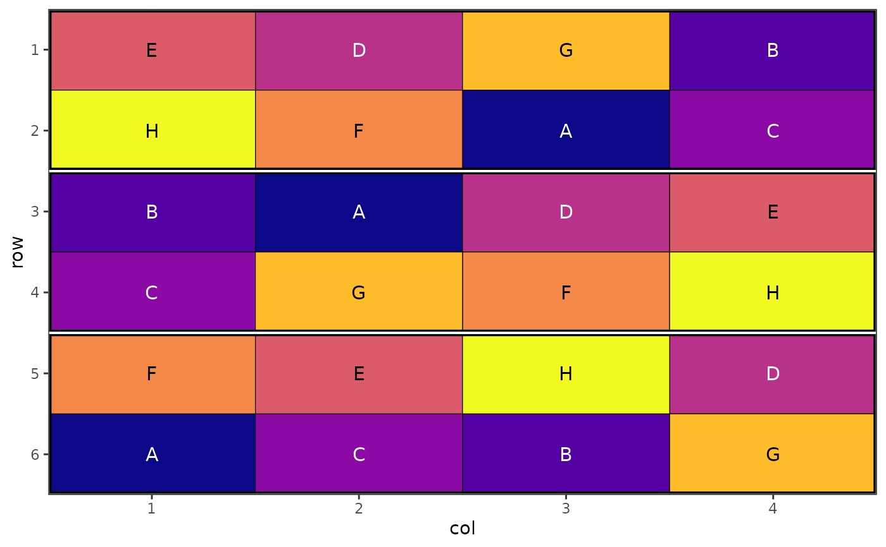
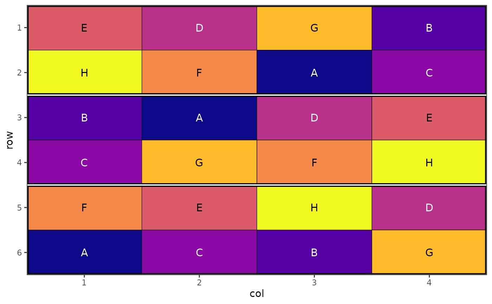

Generate plots for designs generated in speed
Usage
autoplot(object, ...)
# S3 method for class 'design'
autoplot(
object,
rotation = 0,
size = 4,
margin = FALSE,
palette = "default",
buffer = NULL,
row = NULL,
column = NULL,
block = NULL,
treatments = NULL,
...
)Arguments
- object
An experimental design object generated from
speed().- ...
Arguments passed to methods.
- rotation
Rotate the x axis labels and the treatment group labels within the plot. Allows for easier reading of long axis or treatment labels. Number between 0 and 360 (inclusive) - default 0
- size
Increase or decrease the text size within the plot for treatment labels. Numeric with default value of 4.
- margin
Logical (default
FALSE). A value ofFALSEwill expand the plot to the edges of the plotting area i.e. remove white space between plot and axes.- palette
A string specifying the colour scheme to use for plotting or a vector of custom colours to use as the palette. Default is equivalent to "Spectral". Colour blind friendly palettes can also be provided via options
"colour blind"(or"color blind", both equivalent to"viridis"),"magma","inferno","plasma","cividis","rocket","mako"or"turbo". Other palettes fromscales::brewer_pal()are also possible.- buffer
A string specifying the buffer plots to include for plotting. Default is
NULL(no buffers plotted). Other options are "edge" (outer edge of trial area), "rows" (between rows), "columns" (between columns), "double row" (a buffer row each side of a treatment row) or "double column" (a buffer row each side of a treatment column). "blocks" (a buffer around each treatment block) will be implemented in a future release.- row
A variable to plot a column from
objectas rows.- column
A variable to plot a column from
objectas columns.- block
A variable to plot a column from
objectas blocks.- treatments
A variable to plot a column from
objectas treatments.
Examples
# Create a design with blocks
df <- data.frame(
row = rep(1:6, each = 4),
col = rep(1:4, times = 6),
treatment = rep(LETTERS[1:8], 3),
block = rep(1:3, each = 8))
# Set seed for reproducibility
set.seed(42)
# Optimize while respecting blocks
result <- speed(df,
"treatment",
swap_within = "block",
iterations = 5000)
#> Iteration: 1000 Score: 2.571429 Best: 2.571429 Since Improvement: 352
#> Iteration: 2000 Score: 2.571429 Best: 2.571429 Since Improvement: 1352
#> Early stopping at iteration 2648
# Plot the design with block boundaries
autoplot(result)
 # Colour blind friendly colours
autoplot(result, palette = "colour-blind")
# Alternative colour scheme
autoplot(result, palette = "plasma")
df <- data.frame(
row = rep(1:4, each = 3),
col = rep(1:3, times = 4),
treatment = rep(LETTERS[1:4], 3))
# Set seed for reproducibility
set.seed(42)
# Optimize while respecting blocks
result <- speed(df,
"treatment",
iterations = 5000)
#> Iteration: 1000 Score: 1 Best: 1 Since Improvement: 734
#> Iteration: 2000 Score: 1 Best: 1 Since Improvement: 1734
#> Early stopping at iteration 2266
# Custom colour palette
autoplot(result, palette = c("#ef746a", "#3fbfc5", "#81ae00", "#c37cff"))

# Colour blind friendly colours
autoplot(result, palette = "colour-blind")
# Alternative colour scheme
autoplot(result, palette = "plasma")
df <- data.frame(
row = rep(1:4, each = 3),
col = rep(1:3, times = 4),
treatment = rep(LETTERS[1:4], 3))
# Set seed for reproducibility
set.seed(42)
# Optimize while respecting blocks
result <- speed(df,
"treatment",
iterations = 5000)
#> Iteration: 1000 Score: 1 Best: 1 Since Improvement: 734
#> Iteration: 2000 Score: 1 Best: 1 Since Improvement: 1734
#> Early stopping at iteration 2266
# Custom colour palette
autoplot(result, palette = c("#ef746a", "#3fbfc5", "#81ae00", "#c37cff"))
